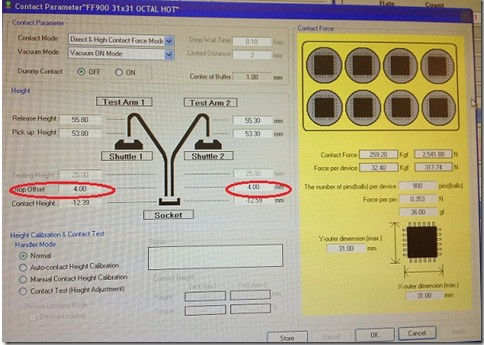

Service History
Subject: Request for Soft Contact with High Contact Force
Handler Model: NX1032XS (S/N: 182347)
Controller: RC520 (S/N: 00504), DUBOX030 (S/N: 100004), PSUNT353 (P892)
Date: 11 Jan 2013
Symptom
Request for Soft Contact with High Contact Force for NX1032XS.
Action
11 Jan 2013
HMI Ver 1.50A release "Direct & High Contact Force Mode", the input of "Contact Height"(Soft Contact) was enabled.
User is able to key the Drop Offset as a form of "soft contact".
